Retained mask pixel audit: all 47 standards and four target controls Unadjusted uint8 RAW display, binary recorded label MASK, red inner-boundary OVERLAY. No IOD selection or manual acceptance. Crops use the full label bounding box plus 64 pixels, clipped at the tile edge. Gallery crops are independent of helper metric crops. Numerical reconstruction does not qualify calibration.
001 Process_413_green.ome.tiff::tile_y000000_x016384.tiff::1 standard; specimen 32469; CSV line 2; bounds xyxy [2727, 1696, 2909, 1892]; clipped=False; full-label pixels=2984; helper fallback=False
Coordinates: {"helper_centroid_xy": [2817.16, 1791.28], "helper_tile_origin_xy": [0, 0], "mode": "standard_global_to_local_copy", "original_centroid_xy": ["19201.16", "1791.28"], "original_tile_origin_xy": ["16384", "0"]}
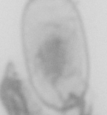
RAW 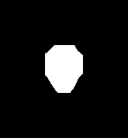
MASK OVERLAY 002 Process_413_green.ome.tiff::tile_y000000_x032768.tiff::1 standard; specimen 32469; CSV line 3; bounds xyxy [2660, 3602, 2872, 3810]; clipped=False; full-label pixels=4297; helper fallback=False
Coordinates: {"helper_centroid_xy": [2763.6800000000003, 3704.94], "helper_tile_origin_xy": [0, 0], "mode": "standard_global_to_local_copy", "original_centroid_xy": ["35531.68", "3704.94"], "original_tile_origin_xy": ["32768", "0"]}
RAW MASK 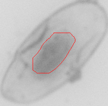
OVERLAY 003 Process_413_green.ome.tiff::tile_y000000_x032768.tiff::2 standard; specimen 32469; CSV line 4; bounds xyxy [2043, 3601, 2255, 3817]; clipped=False; full-label pixels=6083; helper fallback=False
Coordinates: {"helper_centroid_xy": [2150.8199999999997, 3708.84], "helper_tile_origin_xy": [0, 0], "mode": "standard_global_to_local_copy", "original_centroid_xy": ["34918.82", "3708.84"], "original_tile_origin_xy": ["32768", "0"]}
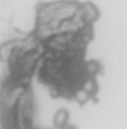
RAW MASK 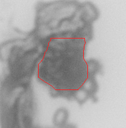
OVERLAY 004 Process_413_green.ome.tiff::tile_y000000_x036864.tiff::1 standard; specimen 32469; CSV line 5; bounds xyxy [2092, 3584, 2270, 3753]; clipped=False; full-label pixels=1682; helper fallback=False
Coordinates: {"helper_centroid_xy": [2180.199999999997, 3666.2], "helper_tile_origin_xy": [0, 0], "mode": "standard_global_to_local_copy", "original_centroid_xy": ["39044.2", "3666.2"], "original_tile_origin_xy": ["36864", "0"]}
RAW MASK 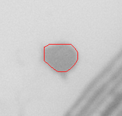
OVERLAY 005 Process_413_green.ome.tiff::tile_y004096_x016384.tiff::1 standard; specimen 32469; CSV line 6; bounds xyxy [3839, 3627, 4046, 3802]; clipped=False; full-label pixels=2729; helper fallback=False
Coordinates: {"helper_centroid_xy": [3940.9000000000015, 3712.6400000000003], "helper_tile_origin_xy": [0, 0], "mode": "standard_global_to_local_copy", "original_centroid_xy": ["20324.9", "7808.64"], "original_tile_origin_xy": ["16384", "4096"]}
RAW 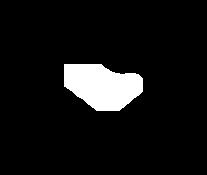
MASK OVERLAY 006 Process_413_green.ome.tiff::tile_y004096_x036864.tiff::1 standard; specimen 32469; CSV line 7; bounds xyxy [445, 588, 643, 772]; clipped=False; full-label pixels=2912; helper fallback=False
Coordinates: {"helper_centroid_xy": [540.4599999999991, 677.2799999999997], "helper_tile_origin_xy": [0, 0], "mode": "standard_global_to_local_copy", "original_centroid_xy": ["37404.46", "4773.28"], "original_tile_origin_xy": ["36864", "4096"]}
RAW 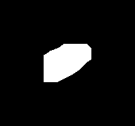
MASK OVERLAY 007 Process_413_green.ome.tiff::tile_y004096_x036864.tiff::2 standard; specimen 32469; CSV line 8; bounds xyxy [1429, 717, 1628, 896]; clipped=False; full-label pixels=2659; helper fallback=False
Coordinates: {"helper_centroid_xy": [1525.9599999999991, 805.6499999999996], "helper_tile_origin_xy": [0, 0], "mode": "standard_global_to_local_copy", "original_centroid_xy": ["38389.96", "4901.65"], "original_tile_origin_xy": ["36864", "4096"]}
RAW 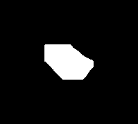
MASK 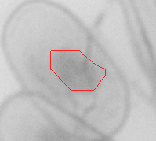
OVERLAY 008 Process_413_green.ome.tiff::tile_y004096_x036864.tiff::3 standard; specimen 32469; CSV line 9; bounds xyxy [287, 1354, 449, 1511]; clipped=False; full-label pixels=842; helper fallback=False
Coordinates: {"helper_centroid_xy": [367.02999999999884, 1431.4899999999998], "helper_tile_origin_xy": [0, 0], "mode": "standard_global_to_local_copy", "original_centroid_xy": ["37231.03", "5527.49"], "original_tile_origin_xy": ["36864", "4096"]}
RAW MASK 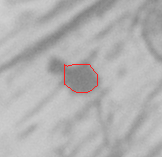
OVERLAY 009 Process_413_green.ome.tiff::tile_y004096_x036864.tiff::4 standard; specimen 32469; CSV line 10; bounds xyxy [1784, 1786, 2001, 1977]; clipped=False; full-label pixels=4025; helper fallback=False
Coordinates: {"helper_centroid_xy": [1889.4000000000015, 1880.4099999999999], "helper_tile_origin_xy": [0, 0], "mode": "standard_global_to_local_copy", "original_centroid_xy": ["38753.4", "5976.41"], "original_tile_origin_xy": ["36864", "4096"]}
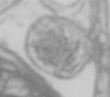
RAW MASK OVERLAY 010 Process_413_green.ome.tiff::tile_y004096_x036864.tiff::5 standard; specimen 32469; CSV line 11; bounds xyxy [1984, 1876, 2194, 2077]; clipped=False; full-label pixels=5008; helper fallback=False
Coordinates: {"helper_centroid_xy": [2084.1200000000026, 1975.17], "helper_tile_origin_xy": [0, 0], "mode": "standard_global_to_local_copy", "original_centroid_xy": ["38948.12", "6071.17"], "original_tile_origin_xy": ["36864", "4096"]}
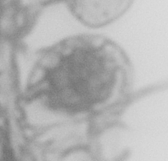
RAW MASK 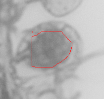
OVERLAY 011 Process_413_green.ome.tiff::tile_y004096_x036864.tiff::6 standard; specimen 32469; CSV line 12; bounds xyxy [13, 2846, 220, 3016]; clipped=False; full-label pixels=2793; helper fallback=False
Coordinates: {"helper_centroid_xy": [115.45999999999913, 2929.12], "helper_tile_origin_xy": [0, 0], "mode": "standard_global_to_local_copy", "original_centroid_xy": ["36979.46", "7025.12"], "original_tile_origin_xy": ["36864", "4096"]}
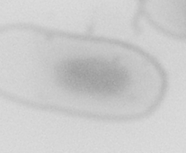
RAW 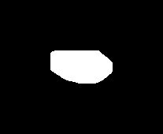
MASK OVERLAY 012 Process_413_green.ome.tiff::tile_y004096_x036864.tiff::7 standard; specimen 32469; CSV line 13; bounds xyxy [2416, 2146, 2637, 2326]; clipped=False; full-label pixels=3891; helper fallback=False
Coordinates: {"helper_centroid_xy": [2525.5800000000017, 2233.46], "helper_tile_origin_xy": [0, 0], "mode": "standard_global_to_local_copy", "original_centroid_xy": ["39389.58", "6329.46"], "original_tile_origin_xy": ["36864", "4096"]}
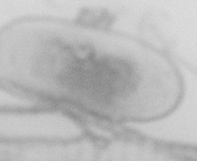
RAW 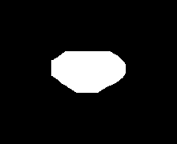
MASK 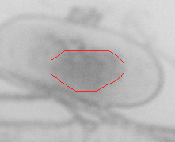
OVERLAY 013 Process_413_green.ome.tiff::tile_y004096_x036864.tiff::8 standard; specimen 32469; CSV line 14; bounds xyxy [464, 3234, 655, 3423]; clipped=False; full-label pixels=3095; helper fallback=False
Coordinates: {"helper_centroid_xy": [557.6900000000023, 3327.0299999999997], "helper_tile_origin_xy": [0, 0], "mode": "standard_global_to_local_copy", "original_centroid_xy": ["37421.69", "7423.03"], "original_tile_origin_xy": ["36864", "4096"]}
RAW MASK 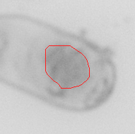
OVERLAY 014 Process_413_green.ome.tiff::tile_y008192_x045056.tiff::1 standard; specimen 32469; CSV line 15; bounds xyxy [100, 2251, 297, 2446]; clipped=False; full-label pixels=3799; helper fallback=False
Coordinates: {"helper_centroid_xy": [197.37000000000262, 2345.76], "helper_tile_origin_xy": [0, 0], "mode": "standard_global_to_local_copy", "original_centroid_xy": ["45253.37", "10537.76"], "original_tile_origin_xy": ["45056", "8192"]}
RAW MASK 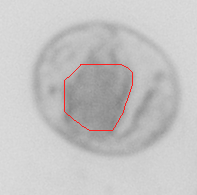
OVERLAY 015 Process_413_green.ome.tiff::tile_y008192_x045056.tiff::2 standard; specimen 32469; CSV line 16; bounds xyxy [1652, 2686, 1863, 2863]; clipped=False; full-label pixels=3120; helper fallback=False
Coordinates: {"helper_centroid_xy": [1754.3199999999997, 2773.76], "helper_tile_origin_xy": [0, 0], "mode": "standard_global_to_local_copy", "original_centroid_xy": ["46810.32", "10965.76"], "original_tile_origin_xy": ["45056", "8192"]}
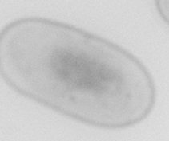
RAW 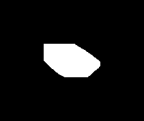
MASK 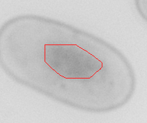
OVERLAY 016 Process_413_green.ome.tiff::tile_y008192_x045056.tiff::3 standard; specimen 32469; CSV line 17; bounds xyxy [1660, 2926, 1869, 3111]; clipped=False; full-label pixels=3188; helper fallback=False
Coordinates: {"helper_centroid_xy": [1763.0299999999988, 3016.3600000000006], "helper_tile_origin_xy": [0, 0], "mode": "standard_global_to_local_copy", "original_centroid_xy": ["46819.03", "11208.36"], "original_tile_origin_xy": ["45056", "8192"]}
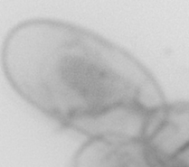
RAW 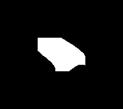
MASK OVERLAY 017 Process_413_green.ome.tiff::tile_y008192_x045056.tiff::4 standard; specimen 32469; CSV line 18; bounds xyxy [529, 3984, 736, 4096]; clipped=True; full-label pixels=3391; helper fallback=False
Coordinates: {"helper_centroid_xy": [628.5199999999968, 4072.7700000000004], "helper_tile_origin_xy": [0, 0], "mode": "standard_global_to_local_copy", "original_centroid_xy": ["45684.52", "12264.77"], "original_tile_origin_xy": ["45056", "8192"]}
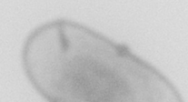
RAW MASK 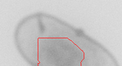
OVERLAY 018 Process_413_green.ome.tiff::tile_y008192_x045056.tiff::5 standard; specimen 32469; CSV line 19; bounds xyxy [2187, 3259, 2386, 3436]; clipped=False; full-label pixels=2574; helper fallback=False
Coordinates: {"helper_centroid_xy": [2285.239999999998, 3346.5200000000004], "helper_tile_origin_xy": [0, 0], "mode": "standard_global_to_local_copy", "original_centroid_xy": ["47341.24", "11538.52"], "original_tile_origin_xy": ["45056", "8192"]}
RAW 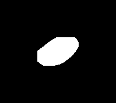
MASK 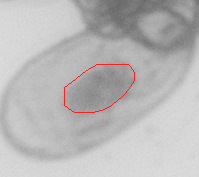
OVERLAY 019 Process_413_green.ome.tiff::tile_y020480_x049152.tiff::1 standard; specimen 32469; CSV line 20; bounds xyxy [44, 2220, 229, 2422]; clipped=False; full-label pixels=3508; helper fallback=False
Coordinates: {"helper_centroid_xy": [134.44000000000233, 2318.369999999999], "helper_tile_origin_xy": [0, 0], "mode": "standard_global_to_local_copy", "original_centroid_xy": ["49286.44", "22798.37"], "original_tile_origin_xy": ["49152", "20480"]}
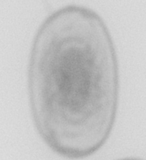
RAW MASK OVERLAY 020 Process_413_green.ome.tiff::tile_y024576_x000000.tiff::1 standard; specimen 32469; CSV line 21; bounds xyxy [1656, 1809, 1826, 2003]; clipped=False; full-label pixels=2114; helper fallback=False
Coordinates: {"helper_centroid_xy": [1740.58, 1903.4700000000012], "helper_tile_origin_xy": [0, 0], "mode": "standard_global_to_local_copy", "original_centroid_xy": ["1740.58", "26479.47"], "original_tile_origin_xy": ["0", "24576"]}
RAW MASK 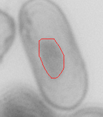
OVERLAY 021 Process_413_green.ome.tiff::tile_y024576_x000000.tiff::2 standard; specimen 32469; CSV line 22; bounds xyxy [1586, 2619, 1785, 2789]; clipped=False; full-label pixels=2415; helper fallback=False
Coordinates: {"helper_centroid_xy": [1685.33, 2701.279999999999], "helper_tile_origin_xy": [0, 0], "mode": "standard_global_to_local_copy", "original_centroid_xy": ["1685.33", "27277.28"], "original_tile_origin_xy": ["0", "24576"]}
022 Process_413_green.ome.tiff::tile_y024576_x000000.tiff::3 standard; specimen 32469; CSV line 23; bounds xyxy [1566, 2283, 1786, 2466]; clipped=False; full-label pixels=3899; helper fallback=False
Coordinates: {"helper_centroid_xy": [1675.05, 2373.2599999999984], "helper_tile_origin_xy": [0, 0], "mode": "standard_global_to_local_copy", "original_centroid_xy": ["1675.05", "26949.26"], "original_tile_origin_xy": ["0", "24576"]}
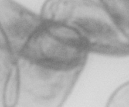
RAW MASK OVERLAY 023 Process_413_green.ome.tiff::tile_y032768_x008192.tiff::1 standard; specimen 32469; CSV line 24; bounds xyxy [165, 638, 355, 826]; clipped=False; full-label pixels=2944; helper fallback=False
Coordinates: {"helper_centroid_xy": [256.1800000000003, 728.1900000000023], "helper_tile_origin_xy": [0, 0], "mode": "standard_global_to_local_copy", "original_centroid_xy": ["8448.18", "33496.19"], "original_tile_origin_xy": ["8192", "32768"]}
RAW 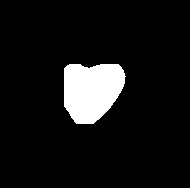
MASK 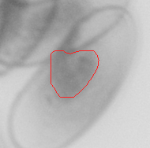
OVERLAY 024 Process_413_green.ome.tiff::tile_y032768_x008192.tiff::2 standard; specimen 32469; CSV line 25; bounds xyxy [555, 1253, 769, 1424]; clipped=False; full-label pixels=2973; helper fallback=False
Coordinates: {"helper_centroid_xy": [659.1399999999994, 1336.1800000000003], "helper_tile_origin_xy": [0, 0], "mode": "standard_global_to_local_copy", "original_centroid_xy": ["8851.14", "34104.18"], "original_tile_origin_xy": ["8192", "32768"]}
RAW 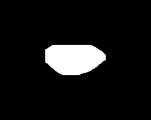
MASK OVERLAY 025 Process_413_green.ome.tiff::tile_y032768_x008192.tiff::3 standard; specimen 32469; CSV line 26; bounds xyxy [213, 1004, 411, 1193]; clipped=False; full-label pixels=2701; helper fallback=False
Coordinates: {"helper_centroid_xy": [309.6299999999992, 1096.1200000000026], "helper_tile_origin_xy": [0, 0], "mode": "standard_global_to_local_copy", "original_centroid_xy": ["8501.63", "33864.12"], "original_tile_origin_xy": ["8192", "32768"]}
026 Process_413_green.ome.tiff::tile_y032768_x008192.tiff::4 standard; specimen 32469; CSV line 27; bounds xyxy [1412, 2666, 1611, 2843]; clipped=False; full-label pixels=2704; helper fallback=False
Coordinates: {"helper_centroid_xy": [1509.5, 2752.5899999999965], "helper_tile_origin_xy": [0, 0], "mode": "standard_global_to_local_copy", "original_centroid_xy": ["9701.5", "35520.59"], "original_tile_origin_xy": ["8192", "32768"]}
027 Process_413_green.ome.tiff::tile_y032768_x012288.tiff::1 standard; specimen 32469; CSV line 28; bounds xyxy [1712, 1894, 1895, 2069]; clipped=False; full-label pixels=1977; helper fallback=False
Coordinates: {"helper_centroid_xy": [1801.5300000000007, 1980.3499999999985], "helper_tile_origin_xy": [0, 0], "mode": "standard_global_to_local_copy", "original_centroid_xy": ["14089.53", "34748.35"], "original_tile_origin_xy": ["12288", "32768"]}
RAW 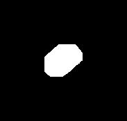
MASK OVERLAY 028 Process_413_green.ome.tiff::tile_y032768_x012288.tiff::2 standard; specimen 32469; CSV line 29; bounds xyxy [2689, 2740, 2897, 2907]; clipped=False; full-label pixels=2820; helper fallback=False
Coordinates: {"helper_centroid_xy": [2792.66, 2822.470000000001], "helper_tile_origin_xy": [0, 0], "mode": "standard_global_to_local_copy", "original_centroid_xy": ["15080.66", "35590.47"], "original_tile_origin_xy": ["12288", "32768"]}
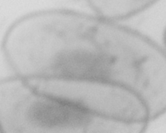
RAW 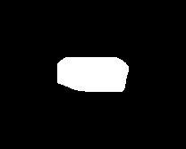
MASK OVERLAY 029 Process_413_green.ome.tiff::tile_y032768_x012288.tiff::3 standard; specimen 32469; CSV line 30; bounds xyxy [2291, 2368, 2470, 2538]; clipped=False; full-label pixels=1879; helper fallback=False
Coordinates: {"helper_centroid_xy": [2379.8500000000004, 2451.8799999999974], "helper_tile_origin_xy": [0, 0], "mode": "standard_global_to_local_copy", "original_centroid_xy": ["14667.85", "35219.88"], "original_tile_origin_xy": ["12288", "32768"]}
RAW 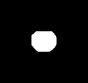
MASK 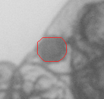
OVERLAY 030 Process_413_green.ome.tiff::tile_y032768_x012288.tiff::4 standard; specimen 32469; CSV line 31; bounds xyxy [2659, 2801, 2868, 2965]; clipped=False; full-label pixels=2378; helper fallback=False
Coordinates: {"helper_centroid_xy": [2760.9500000000007, 2881.489999999998], "helper_tile_origin_xy": [0, 0], "mode": "standard_global_to_local_copy", "original_centroid_xy": ["15048.95", "35649.49"], "original_tile_origin_xy": ["12288", "32768"]}
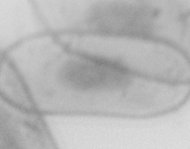
RAW 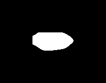
MASK OVERLAY 031 Process_413_green.ome.tiff::tile_y032768_x012288.tiff::5 standard; specimen 32469; CSV line 32; bounds xyxy [3251, 2267, 3448, 2465]; clipped=False; full-label pixels=2976; helper fallback=False
Coordinates: {"helper_centroid_xy": [3346.59, 2364.6699999999983], "helper_tile_origin_xy": [0, 0], "mode": "standard_global_to_local_copy", "original_centroid_xy": ["15634.59", "35132.67"], "original_tile_origin_xy": ["12288", "32768"]}
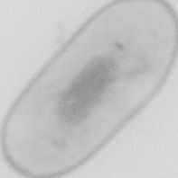
RAW MASK 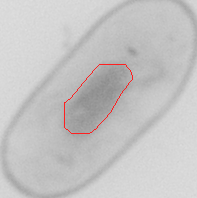
OVERLAY 032 Process_414_green.ome.tiff::tile_y000000_x024576.tiff::1 standard; specimen 32470; CSV line 33; bounds xyxy [1704, 2988, 1874, 3136]; clipped=False; full-label pixels=696; helper fallback=False
Coordinates: {"helper_centroid_xy": [1786.9399999999987, 3062.55], "helper_tile_origin_xy": [0, 0], "mode": "standard_global_to_local_copy", "original_centroid_xy": ["26362.94", "3062.55"], "original_tile_origin_xy": ["24576", "0"]}
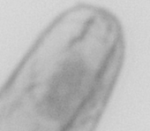
RAW MASK 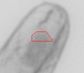
OVERLAY 033 Process_414_green.ome.tiff::tile_y000000_x024576.tiff::2 standard; specimen 32470; CSV line 34; bounds xyxy [2603, 2444, 2813, 2633]; clipped=False; full-label pixels=3926; helper fallback=False
Coordinates: {"helper_centroid_xy": [2706.1100000000006, 2537.55], "helper_tile_origin_xy": [0, 0], "mode": "standard_global_to_local_copy", "original_centroid_xy": ["27282.11", "2537.55"], "original_tile_origin_xy": ["24576", "0"]}
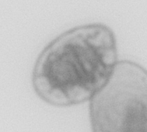
RAW 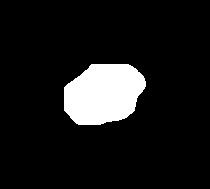
MASK 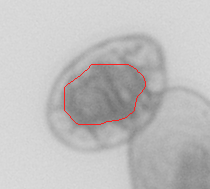
OVERLAY 034 Process_414_green.ome.tiff::tile_y000000_x024576.tiff::3 standard; specimen 32470; CSV line 35; bounds xyxy [2237, 3470, 2461, 3651]; clipped=False; full-label pixels=4249; helper fallback=False
Coordinates: {"helper_centroid_xy": [2348.2000000000007, 3560.25], "helper_tile_origin_xy": [0, 0], "mode": "standard_global_to_local_copy", "original_centroid_xy": ["26924.2", "3560.25"], "original_tile_origin_xy": ["24576", "0"]}
RAW MASK OVERLAY 035 Process_414_green.ome.tiff::tile_y000000_x024576.tiff::4 standard; specimen 32470; CSV line 36; bounds xyxy [2933, 3651, 3136, 3833]; clipped=False; full-label pixels=3642; helper fallback=False
Coordinates: {"helper_centroid_xy": [3035.5999999999985, 3739.86], "helper_tile_origin_xy": [0, 0], "mode": "standard_global_to_local_copy", "original_centroid_xy": ["27611.6", "3739.86"], "original_tile_origin_xy": ["24576", "0"]}
RAW MASK OVERLAY 036 Process_414_green.ome.tiff::tile_y000000_x024576.tiff::5 standard; specimen 32470; CSV line 37; bounds xyxy [2122, 3227, 2322, 3408]; clipped=False; full-label pixels=3186; helper fallback=False
Coordinates: {"helper_centroid_xy": [2219.6699999999983, 3315.76], "helper_tile_origin_xy": [0, 0], "mode": "standard_global_to_local_copy", "original_centroid_xy": ["26795.67", "3315.76"], "original_tile_origin_xy": ["24576", "0"]}
RAW MASK OVERLAY 037 Process_414_green.ome.tiff::tile_y000000_x028672.tiff::1 standard; specimen 32470; CSV line 38; bounds xyxy [40, 0, 242, 178]; clipped=True; full-label pixels=3214; helper fallback=False
Coordinates: {"helper_centroid_xy": [138.0699999999997, 82.97], "helper_tile_origin_xy": [0, 0], "mode": "standard_global_to_local_copy", "original_centroid_xy": ["28810.07", "82.97"], "original_tile_origin_xy": ["28672", "0"]}
RAW MASK OVERLAY 038 Process_414_green.ome.tiff::tile_y020480_x012288.tiff::1 standard; specimen 32470; CSV line 39; bounds xyxy [1028, 2681, 1249, 2878]; clipped=False; full-label pixels=5442; helper fallback=False
Coordinates: {"helper_centroid_xy": [1136.1599999999999, 2777.1100000000006], "helper_tile_origin_xy": [0, 0], "mode": "standard_global_to_local_copy", "original_centroid_xy": ["13424.16", "23257.11"], "original_tile_origin_xy": ["12288", "20480"]}
RAW MASK OVERLAY 039 Process_414_green.ome.tiff::tile_y020480_x012288.tiff::2 standard; specimen 32470; CSV line 40; bounds xyxy [526, 3413, 730, 3616]; clipped=False; full-label pixels=4546; helper fallback=False
Coordinates: {"helper_centroid_xy": [625.1800000000003, 3512.5999999999985], "helper_tile_origin_xy": [0, 0], "mode": "standard_global_to_local_copy", "original_centroid_xy": ["12913.18", "23992.6"], "original_tile_origin_xy": ["12288", "20480"]}
RAW MASK OVERLAY 040 Process_414_green.ome.tiff::tile_y020480_x036864.tiff::1 standard; specimen 32470; CSV line 41; bounds xyxy [478, 2034, 677, 2211]; clipped=False; full-label pixels=2921; helper fallback=False
Coordinates: {"helper_centroid_xy": [576.1500000000015, 2119.7700000000004], "helper_tile_origin_xy": [0, 0], "mode": "standard_global_to_local_copy", "original_centroid_xy": ["37440.15", "22599.77"], "original_tile_origin_xy": ["36864", "20480"]}
RAW MASK OVERLAY 041 Process_414_green.ome.tiff::tile_y020480_x040960.tiff::1 standard; specimen 32470; CSV line 42; bounds xyxy [1047, 0, 1220, 83]; clipped=True; full-label pixels=593; helper fallback=False
Coordinates: {"helper_centroid_xy": [1131.5400000000009, 8.049999999999272], "helper_tile_origin_xy": [0, 0], "mode": "standard_global_to_local_copy", "original_centroid_xy": ["42091.54", "20488.05"], "original_tile_origin_xy": ["40960", "20480"]}
RAW MASK OVERLAY 042 Process_414_green.ome.tiff::tile_y028672_x016384.tiff::1 standard; specimen 32470; CSV line 43; bounds xyxy [2457, 475, 2662, 660]; clipped=False; full-label pixels=3780; helper fallback=False
Coordinates: {"helper_centroid_xy": [2558.3499999999985, 565.9199999999983], "helper_tile_origin_xy": [0, 0], "mode": "standard_global_to_local_copy", "original_centroid_xy": ["18942.35", "29237.92"], "original_tile_origin_xy": ["16384", "28672"]}
RAW MASK OVERLAY 043 Process_414_green.ome.tiff::tile_y028672_x016384.tiff::2 standard; specimen 32470; CSV line 44; bounds xyxy [2084, 1928, 2269, 2112]; clipped=False; full-label pixels=2855; helper fallback=False
Coordinates: {"helper_centroid_xy": [2173.9799999999996, 2020.5400000000009], "helper_tile_origin_xy": [0, 0], "mode": "standard_global_to_local_copy", "original_centroid_xy": ["18557.98", "30692.54"], "original_tile_origin_xy": ["16384", "28672"]}
RAW MASK OVERLAY 044 Process_414_green.ome.tiff::tile_y028672_x040960.tiff::1 standard; specimen 32470; CSV line 45; bounds xyxy [3305, 1013, 3507, 1183]; clipped=False; full-label pixels=2567; helper fallback=False
Coordinates: {"helper_centroid_xy": [3405.029999999999, 1097.1699999999983], "helper_tile_origin_xy": [0, 0], "mode": "standard_global_to_local_copy", "original_centroid_xy": ["44365.03", "29769.17"], "original_tile_origin_xy": ["40960", "28672"]}
RAW MASK OVERLAY 045 Process_414_green.ome.tiff::tile_y028672_x065536.tiff::1 standard; specimen 32470; CSV line 46; bounds xyxy [580, 1957, 772, 2112]; clipped=False; full-label pixels=1692; helper fallback=False
Coordinates: {"helper_centroid_xy": [676.1199999999953, 2034.2299999999996], "helper_tile_origin_xy": [0, 0], "mode": "standard_global_to_local_copy", "original_centroid_xy": ["66212.12", "30706.23"], "original_tile_origin_xy": ["65536", "28672"]}
RAW MASK OVERLAY 046 Process_414_green.ome.tiff::tile_y028672_x065536.tiff::2 standard; specimen 32470; CSV line 47; bounds xyxy [3424, 2371, 3637, 2555]; clipped=False; full-label pixels=4051; helper fallback=False
Coordinates: {"helper_centroid_xy": [3529.020000000004, 2461.4199999999983], "helper_tile_origin_xy": [0, 0], "mode": "standard_global_to_local_copy", "original_centroid_xy": ["69065.02", "31133.42"], "original_tile_origin_xy": ["65536", "28672"]}
RAW MASK OVERLAY
047 Process_414_green.ome.tiff::tile_y028672_x065536.tiff::3 standard; specimen 32470; CSV line 48; bounds xyxy [3125, 2562, 3334, 2752]; clipped=False; full-label pixels=3968; helper fallback=False
Coordinates: {"helper_centroid_xy": [3226.3800000000047, 2656.9199999999983], "helper_tile_origin_xy": [0, 0], "mode": "standard_global_to_local_copy", "original_centroid_xy": ["68762.38", "31328.92"], "original_tile_origin_xy": ["65536", "28672"]}
RAW MASK OVERLAY 048 Process_314_raw_green.ome.tiff::tile_y024576_x024576.tiff::20 target_control; specimen 3372; CSV line 313; bounds xyxy [525, 1873, 720, 2072]; clipped=False; full-label pixels=3117; helper fallback=True
Coordinates: {"helper_centroid_xy": ["621.74", "1971.94"], "helper_tile_origin_xy": ["24576", "24576"], "mode": "target_historical_unchanged", "original_centroid_xy": ["621.74", "1971.94"], "original_tile_origin_xy": ["24576", "24576"]}
RAW MASK OVERLAY
049 Process_315_raw_green.ome.tiff::tile_y016384_x024576.tiff::2 target_control; specimen 3373; CSV line 325; bounds xyxy [191, 852, 397, 1048]; clipped=False; full-label pixels=3430; helper fallback=True
Coordinates: {"helper_centroid_xy": ["292.88", "948.9"], "helper_tile_origin_xy": ["24576", "16384"], "mode": "target_historical_unchanged", "original_centroid_xy": ["292.88", "948.9"], "original_tile_origin_xy": ["24576", "16384"]}
RAW MASK OVERLAY
050 Process_320_raw_green.ome.tiff::tile_y004096_x081920.tiff::41 target_control; specimen 3401; CSV line 333; bounds xyxy [3310, 3720, 3502, 3915]; clipped=False; full-label pixels=2960; helper fallback=True
Coordinates: {"helper_centroid_xy": ["3405.27", "3816.42"], "helper_tile_origin_xy": ["81920", "4096"], "mode": "target_historical_unchanged", "original_centroid_xy": ["3405.27", "3816.42"], "original_tile_origin_xy": ["81920", "4096"]}
RAW MASK OVERLAY
051 Process_321_raw_green.ome.tiff::tile_y004096_x028672.tiff::34 target_control; specimen 3402; CSV line 338; bounds xyxy [2661, 1087, 2845, 1282]; clipped=False; full-label pixels=2901; helper fallback=True
Coordinates: {"helper_centroid_xy": ["2752.19", "1183.61"], "helper_tile_origin_xy": ["28672", "4096"], "mode": "target_historical_unchanged", "original_centroid_xy": ["2752.19", "1183.61"], "original_tile_origin_xy": ["28672", "4096"]}
RAW MASK OVERLAY